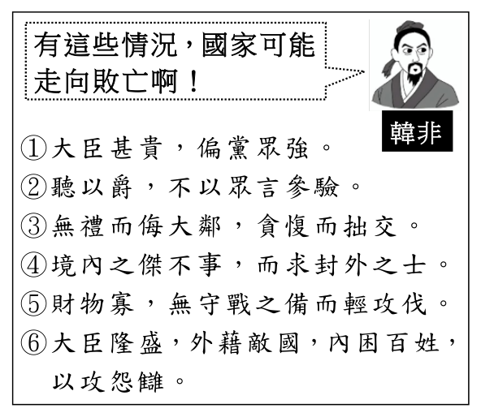

開卷有益 ／
學科能力測驗 ／ 國綜 ／ 115 年115 年學科能力測驗國綜試題與答案
這一頁是民國 115 年學科能力測驗國綜的整份歷屆試題，共 36 題，題目與標準答案出自大考中心 學測歷年試題（依著作權法 §9，考試試題不受著作權保護），其中 36 題附有詳解。以下逐題列出題幹、選項與答案；要計時作答或記錄成績，請用線上練習。
線上作答這一科 →
全部 36 題
第 1 題
下列各組「」內的字，讀音前後相同的是：
（A） 取枕「攲」臥／風光「旖」旎（B） 略「諳」水性／「喑」啞難言（C） 「枇」杷甘美／「毗」鄰而居（D） 燎原莫「遏」／登門拜「謁」答案：（C）
詳解與考點 正解：題幹要求兩字讀音相同，須逐組核對字音。C：「枇」與「毗」皆讀 ㄆㄧˊ，讀音相同，故 C 為正解。
A：「攲」讀 ㄑㄧ，「旖」讀 ㄧˇ，讀音不同。它看起來對，是因為兩字皆不常用，易只憑字形猜讀音。
B：「諳」讀 ㄢ，「喑」讀 ㄧㄣ，讀音不同。
D：「遏」讀 ㄜˋ，「謁」讀 ㄧㄝˋ，讀音不同。
本題考點：形近字讀音辨析——逐字確認標音，不可只憑字形相近推測；字音判準——同組兩字的聲母、韻母與聲調均須一致。
第 2 題
下列文句，完全沒有錯別字的是：
（A） 詐騙行為絕不可姑息，方能以儆效尤（B） 人工智慧日新月異，影響力無遠弗界（C） 大伯退休後離群所居，仍常惦念老友（D） 老吳自詡滿腹經綸，卻昧於人情事故答案：（A）
詳解與考點 正解：題幹要求「完全沒有錯別字」，A 的「以儆效尤」中「儆」為警戒之意，整句用字正確，故 A 為正解。
B：「無遠弗界」應作「無遠弗屆」；「屆」有到達之意，「界」指界限，形近而誤。它看起來對，是因為「界」常見於範圍、疆界，容易誤代入「無遠弗屆」的語境。
C：「離群所居」應作「離群索居」；「索居」意為孤獨居住，「所」是處所，與詞義不合，C 錯誤。
D：「人情事故」應作「人情世故」；「世故」指世間習俗與待人處世的經驗，「事故」指意外事件，D 錯誤。
本題考點：錯別字辨析——固定成語須依慣用正字判讀；字義判準——將形近字換回原詞本義驗證，與語境不合即為別字。
第 3 題
依據資料甲、乙，下列敘述最適當的是：甲、鄭用錫、林占梅為清代新竹文學名家，鄭用錫次子鄭如梁娶林占梅之妹為妻。林占梅年幼喪父，由叔父林祥雲撫養成人。乙、鄭用錫曾寫給林占梅一首祝賀詩：「四方男子志，今更挂桑弧。天上誕麟種，人間浴鳳雛。共誇田得玉，早叶夢投珠。清福知誰享，孤山一幅圖。」
（A） 遞送賀詩的信封上，可題「鳳侶鸞儔」呼應 詩意（B） 詩中藉「得玉」、「投珠」，讚美林占梅玉樹臨風（C） 若鄭用錫一併附上箋札，末尾署名前可自稱「家岳父」（D） 若鄭用錫同時寫信向林祥雲致賀，可稱林祥 雲「姻兄」答案：（D）
詳解與考點 正解：題幹的親屬關鍵是鄭用錫之子鄭如梁娶林占梅之妹，而林占梅由叔父林祥雲撫養；鄭用錫與林祥雲因子女婚姻形成姻親關係，寫信致賀時可敬稱年輩相當的姻親為「姻兄」。D 符合稱謂禮俗，故 D 為正解。
A：「鳳侶鸞儔」用於祝賀婚配；詩中的「誕麟種」、「浴鳳雛」、「得玉」、「投珠」是賀人生子的典故，與婚配主題不符。它看起來對，是因為「鳳」、「鸞」同為吉祥鳥，容易被誤認為可呼應詩中的「鳳雛」。
B：「得玉」、「投珠」分別典出田得玉、夢投珠，皆用來祝賀誕子，不是稱讚林占梅玉樹臨風的風姿。
C：林占梅年幼喪父，鄭用錫不能對林占梅自稱「家岳父」；岳父是妻子的父親，與題示的姻親關係不合。
本題考點：親屬稱謂判讀——先依婚姻關係畫出姻親，再依對象的年輩與身分選擇敬稱；賀生典故——得玉、投珠、誕麟種均指祝賀生子，不可誤解為婚賀或容貌讚詞；稱謂語境——岳父專指妻之父，須與實際親屬關係相符。
第 4 題
依據右框，下列篇章的解讀，最適當的是：

（A） 〈鴻門宴 〉中，范增指沛公「其志不在小」，（B） 〈燭之武退秦師〉中，晉文公謂「失其所與，（C） 〈諫逐客書〉中，李斯以「藉寇兵而齎盜糧」（D） 《孟子》中，孟子舉出「塗有餓莩而不知發，答案：（B）
詳解與考點 正解：本題須把各篇章引文放回原文語境，再與右框所列的敗亡徵兆逐項比對。B：〈燭之武退秦師〉中晉文公說「失其所與，不知」，是以不可失去盟友為由避免與秦交惡，對應右框第③項「無禮而侮大鄰，貪愎而拙交」的外交失當，故 B 為正解。
A：范增說沛公「其志不在小」，是在警告劉邦將成楚國大敵，不能對應右框所列的大臣黨羽或不參驗眾言，A 錯誤。
C：「藉寇兵而齎盜糧」比喻驅逐客卿等於資助盜寇，重點是不可排斥可用之才，與其所配對的敗亡徵兆不合，C 錯誤。
D：「塗有餓莩而不知發」批評君主不開倉賑濟、推諉歲荒，與其所配對的軍備攻伐問題不同，D 錯誤。它看起來對，是因為都涉及執政者失職，但仍須比對具體議題。
本題考點：課內文言文與文本對讀——先把引文還原為原文語境，再逐一比對右框命題的具體條件；論說對應判準——主題同為國政不足以判對，須核對外交、用人、賑濟或軍備等論證焦點。
第 5 題
下列是一段古文，依據文意，甲、乙、丙、丁、戊排列順序最適當的是：夫三代之君，惟不忍鄙其民而欺之，甲、及其不可聽也乙、以觀其意之所嚮丙、而服其不然之心丁、故天下有故，而其議及於百姓戊、則又反覆而諭之，以窮極其說是以其民親而愛之。(蘇軾〈書論〉)
（A） 乙丙丁戊甲（B） 丙丁戊甲乙（C） 丁乙甲戊丙（D） 戊丙甲乙丁答案：（C）
詳解與考點 正解：題幹句群的關鍵連詞與代詞指向是「及其不可聽也」中的「其」須承接先前百姓所表達的意向，而「服其不然之心」適合作為曉諭後的結果。文意應為：天下有故，而其議及於百姓（丁）→以觀其意之所嚮（乙）→及其不可聽也（甲）→則又反覆而諭之，以窮極其說（戊）→而服其不然之心（丙），故選 C。
A：乙後接丙，會變成尚未曉諭就先「使其信服」，因果次序倒置；且「及其不可聽也」無從承接已觀察的民意，A 錯誤。
B：丙置於開頭，缺少「反覆而諭之」作為使民眾信服的原因，B 錯誤。
D：戊置於開頭，「則又」缺少前面的條件可承接；丙也應在曉諭之後作結果，D 錯誤。
本題考點：古文語句排序——先找連詞、代詞與結果句的承接對象；排序判準——「觀其意」後才可接「及其不可聽」，「則又反覆而諭之」後才可接「服其不然之心」。
1906年，早田文藏根據小西成章採自南投烏松
坑山的一份無名針葉樹標本，在當時植物學期刊上
發表裸子植物新種─臺灣杉。由於它無法歸入任何
一個現生裸子植物的「屬」，早田文藏因此新立了
「臺灣杉屬」，使臺灣原生植物走上國際舞臺。
臺灣杉樹形高聳，魯凱族稱它
為「撞到月亮的樹」。2023 年找到
的全臺最高樹「大安溪倚天劍」
（84.1 公尺），即是臺灣杉。
不久後，臺灣杉相繼在中國大陸湖北、雲南、福建和緬甸、越南北部被發現，臺灣特有屬的位階不再，但有研究發現：臺灣杉堪稱活化石，它最古老的化石紀錄可溯至阿拉斯加約一億年前的白堊紀地層，在整個新生代，也零星分布於歐亞大陸和北美洲。令學者驚訝的是，億萬年來臺灣杉似乎未改變樣貌，與現生臺灣杉在形態上幾無差別。此外，雖然目前僅分布於東亞幾處地區，但在悠久的地質年代裡，臺灣杉曾廣闊分布於北半球，甚至靠近北極圈，似乎暗示它曾具有適應多樣環境的能力。依據現生臺灣杉族群DNA取樣的結果，發現：雖然臺灣杉整體的遺傳多樣性很低，但臺灣島與亞洲大陸的臺灣杉在遺傳上分化程度較高，各自演化出新的或保留了獨特的古老基因型。進一步以分子鐘分析，兩地的臺灣杉分離至少有兩、三百萬年。學者於是推測，臺灣杉的祖先應該原本在東亞廣泛分布，受第四紀冰河期影響而導致分布破碎化。雲南、越南北部和臺灣島的臺灣杉擁有最高的遺傳多樣性，這些地方很可能是臺灣杉祖先在冰河期的避難所，其餘則是從避難所擴張出去的族群。（改寫自游旨价《通往世界的植物─臺灣高山植物的時空旅史》）
第 6 題
關於上文書寫方式與內容，敘述最適當的是：
（A） 以「臺灣杉如何被發現」、「臺灣杉的祖先如何繁衍擴張族群」為說明主軸（B） 從早田文藏獲得標本與化石而建立一個新屬，使臺灣杉進入國際視野說起（C） 結合時間與空間，揭示由亞洲南部擴散而出的臺灣杉，遠古曾廣布北半球（D） 引學者看法，指出時空環境對臺灣杉分布的 影響，第四紀冰河期尤為關鍵答案：（D）
詳解與考點 正解：題幹問文章的書寫方式與內容，關鍵在作者如何串連研究與臺灣杉分布史。D：文中引述學者的分子鐘分析與推測，指出第四紀冰河期造成分布破碎化，並呈現時空環境的影響，故 D 為正解。
A：文章主軸是臺灣杉的發現、演化與分布變遷，不是祖先如何繁衍擴張族群。
B：早田文藏是依無名針葉樹標本建立新屬，化石並非他取得。
C：文中推測祖先原在東亞廣泛分布，並非由亞洲南部擴散。
本題考點：說明文書寫方式——先辨認作者援引的研究材料，再歸納其說明主軸；內容判讀——選項的時間、地點與因果關係須皆與原文相符。
第 7 題
關於①、②是否符合上文內容，最適當的研判是： ①臺灣杉從悠久的地質年代存活至今，基因雖有所演化，外貌幾乎不變。 ②臺灣島的臺灣杉遺傳多樣性高，故「臺灣杉屬」應為裸子植物特有屬。
（A） ①、②皆符合（B） ①、②皆不符合（C） ①符合，②不符合（D） ①不符合，②符合答案：（C）
詳解與考點 正解：題幹要研判①、②是否符合文章，關鍵是分辨「形態幾無差別」與「遺傳多樣性、特有屬」各自的原文證據。C：①符合，文中說臺灣杉歷經億萬年仍與現生臺灣杉在形態上幾無差別，且臺灣島與亞洲大陸族群各自演化或保留獨特古老基因型；②不符合，文中明言臺灣杉已在中國大陸、緬甸與越南北部發現，臺灣特有屬位階不再，且整體遺傳多樣性很低，故 C 為正解。
A：①雖符合，但②把「臺灣島及部分地區多樣性較高」推成「臺灣特有屬」，與原文不符。
B：①有原文的形態與基因演化依據，不能判為不符合；②仍不符合。
D：②不符合，且①有明確文本證據，不能判為不符合。
本題考點：文本細節研判——將每一敘述拆成數個可核對的主張；「形態未變」不等於「基因未演化」，而特有屬須以分布事實判定，不能由遺傳多樣性直接推論。
第 8 題
下列方框內（【方框】）是一段學術論文摘要，內容與上文第三段畫底線處（【底線】）相近。關於二者寫作方式的異同，敘述最適當的是： 【方框】本研究使用五個 cpDNA 序列片段，分析臺灣杉屬族群間的遺傳變異，結果只找到八種 cpDNA 單套型，而在臺灣的臺灣杉屬族群中只發現一種 cpDNA 單套型，且此單套型與東南亞洲大陸所有臺灣杉屬族群普遍存在的單套型，有八個突變步驟的差異，顯示兩者存在極大分化。
（A） 【方框】的口吻不忌冷硬，【底線】則筆調溫婉淺近，並加入個人的感受吸引讀者（B） 【方框】不忌用專有名詞，【底線】則幾乎不用專有名詞，但引用數據讓讀者易懂（C） 二者皆揭示研究方法與主要發現，並述及研究限制與他人觀點，以求審慎（D） 二者立場皆客觀，但【方框】是研究者自述成果，【底線】是寫作者綜述既有成果答案：（D）
詳解與考點 臺灣杉題組。考學術摘要與科普文章寫作方式的異同。題目選項 A、B 文字缺損，僅 (D) 可判讀：二者立場皆客觀，但文體不同（一為學術摘要，一為科普敘述），寫法有別，故選(D)。此題因選項印刷不完整，把握度受限。
《福爾摩斯新探案》是柯南‧道爾的福爾摩斯系列最後一本短篇小說集。其中，〈王冠寶石案〉使用第三人稱的敘述方式，這種寫法，少了華生作為敘述者特有的平靜和虔敬，在先前的小說集裡僅見於〈最後致意〉。〈王冠寶石案〉不但老套地「把福爾摩斯蠟像擺在窗口」，部分細節也出現疑點。一般讀者雖不必像福爾摩斯迷那樣，知道在 1903年之前，歌劇《霍夫曼的故事》裡的〈威尼斯船歌〉從未出版過任何小提琴獨奏的唱片，但多少知道那個年代的唱片或圓筒錄音，不可能持續播五分鐘，掩護福爾摩斯偷聽其他人的對話。
華生：
福爾摩斯
的助手。
小說集裡另有兩篇故事由主角福爾摩斯自述，這全新的寫法未替兩篇小說增色。〈皮膚變白的軍人〉中有人在麻風病患的床上睡過一夜，竟染上一種不是麻風病卻狀似麻風病的疾患，這種巧合實在牽強。又先前的故事說華生太太死於1893年，這故事卻說發生在1903年華生結婚期間，福爾摩斯迷於是懷疑善良的華生結過不只一次婚。至於〈獅鬃毛〉，先別管故事裡的水母是否真那麼危險，問題是，福爾摩斯說他原先未發現麥菲遜死於海中生物攻擊，是因為他看到死者的毛巾是乾的，以致誤判死者沒下過水。如此說來，麥菲遜與殺人水母纏鬥時，半根頭髮都沒溼嘍……唉！身為醫生的柯南‧道爾，曾在1891年公開指出科赫宣稱「結核菌素能治療結核病」絕不可信。由於當時不少人接受沃羅諾夫醫生發明的回春手術，將動物腺體移植到人類身上，他寫下小說集裡的〈爬行人〉，描寫一名著名生理學教授注射了一種據稱能返老還童的藥後，出現詭異行為，藉以再次批判現實世界的偽科學。（改寫自馬丁‧費德著，柯清心譯《柯南‧道爾所不知道的福爾摩斯》）
第 9 題
上文第三段末尾的「唉」，感嘆的原因最可能是：
（A） 道爾線索布置顯得片面粗疏（B） 道爾誇大了水母的生物特性（C） 福爾摩斯不是善於敘事的人（D） 福爾摩斯不能坦誠面對錯誤答案：（A）
詳解與考點 正解：題幹第三段以「毛巾是乾的」推論死者未下水，卻又設定死者曾與水母在海中纏鬥，這個前提與線索互相矛盾。A：作者以「唉」感嘆的是道爾的線索布置片面粗疏，故 A 為正解。
B：文中雖說「先別管故事裡的水母是否真那麼危險」，感嘆焦點並非水母特性被誇大，B 錯誤。
C：福爾摩斯是否善於敘事不是本段批評重點，C 錯誤。
D：福爾摩斯已說明自己因毛巾乾燥而誤判，並非不能坦誠面對錯誤，D 錯誤。它看起來對，是因為文中確實寫到他的誤判，但作者批評的是情節邏輯。
本題考點：文意推論——先找作者感嘆前的具體矛盾；情節評析——若線索與事件前提無法相容，批評對象是作品安排，不宜轉而推論人物性格。
第 10 題
依據上文，有關柯南•道爾創作福爾摩斯小說，敘述最適當的是：
（A） 福爾摩斯故事常以華生為敘述者，在改變敘 事者時便容易出現寫作的失誤（B） 小說融入歌劇，若讀者不懂歌劇內容，便無法察覺音樂時間不夠掩護偷聽（C） 小說出現一些時間的矛盾時，福爾摩斯迷可能會順應錯誤，產生新的解釋（D） 柯南•道爾總能在作品中呈現醫生專業，並 常借用小說批判現實中的醫學答案：（C）
詳解與考點 正解：題幹問依據全文最適當的創作敘述。文章指出〈皮膚變白的軍人〉與華生婚期矛盾後，福爾摩斯迷懷疑華生結過不只一次婚；這正是順應小說時間錯誤而提出新解釋，故 C 為正解。
A：文章只說兩篇由福爾摩斯自述未增色，並未說改變敘事者便容易造成寫作失誤，A 錯誤。
B：文中說一般讀者多少知道當時錄音不可能持續 5 分鐘，不必懂歌劇內容也可察覺問題，B 錯誤。
D：作者曾以小說批判偽科學，但不能推成「總能」呈現醫生專業且「常」借小說批判現實醫學，D 錯誤。它看起來對，是因為文末確有批判偽科學的例子，但單一例證不足以支持全稱敘述。
本題考點：文章推論——選項須能由文本直接支持，特別留意「總能、常、便」等過度推論；讀者反應——作品設定矛盾可促使讀者以新的詮釋調和錯誤。
從十一世紀末到十六世紀初，西方史家大致都承認這期間是騎士的鼎盛時代，由騎士構成西方武力的主體。從國家的觀點來看，騎士與文吏平行，構成國王的左右手，前者代表武力，後者代表法律。與此相對，中國的「俠」即使在武力極盛的西漢，也沒有成為國家武力的一部分。相反地，「俠」的武力在朝廷眼中是敵對性的，必須加以消滅。自漢代以來，中國社會一天天走上重文輕武的道路，「俠」作為武力集團終於解體，後來甚至也不必然和「武」連在一起。自東漢起，「俠」突破了「武」的領域，成為一種超越精神，並進入儒生文士的道德意識中。故論及「俠」對中國文化的影響，不能不特別注重「俠」與「士」的關係。
和西方騎士相似，中國古代的「士」一方面承擔著建立和維持政治、文化秩序的任務，另一方面又發展出不肯屈服於權威、持「道」以議政的批判傳統。我們通常認定這一傳統的來源在儒家，這個判斷大體上是有根據的。然而從東漢名士的集體反抗行動來看，「俠」見義勇為的作風有極其重要的影響。當時的黨錮之士在道理上固然以儒家為依歸，激昂慷慨的俠節卻提供了他們情感上的動力，後世富於批判精神的儒者也往往帶有「俠氣」。這一發展其實也是很自然的，因為儒家傳統中本有一股「狂」的精神，能與「俠風」一拍即合。（改寫自余英時〈俠與中國文化〉）
第 11 題
依據上文，關於中國古代的「俠」，敘述最適當的是：
（A） 由於社會重文輕武，導致俠與菁英士人處於 對立狀態（B） 俠有激昂慷慨的氣概，可追溯到古代儒家的議政傳統（C） 東漢俠的勢力遠逾以往，乃促成名士的集體反抗行動（D） 俠風狂放進取的一面，與儒者不屈服的批判 精神相契答案：（D）
詳解與考點 正解：文末「儒家傳統中本有一股『狂』的精神，能與『俠風』一拍即合」；這正說明俠風狂放進取的一面，能與儒者不屈服權威的批判精神相契，故 D 為正解。
A：文章說「俠」自東漢起進入儒生文士的道德意識，且後世富批判精神的儒者往往帶有俠氣，並非與菁英士人對立，A 錯誤。
B：文中指出士人持「道」議政的批判傳統大體源自儒家；俠的激昂慷慨提供的是情感動力，不能說俠氣概可追溯至儒家的議政傳統，B 因果倒置。
C：文章只說東漢名士的集體反抗受俠節影響，未說東漢俠的勢力遠逾以往，也未說俠促成該行動，C 無中生有。
本題考點：論說文內容理解——以文中明示的因果與關係判斷選項；因果判準——分清「思想依歸」與「情感動力」，不可把影響關係倒置或增添原文未述的程度。
第 12 題
關於①、②是否符合上文寫作策略，最適當的研判是： ①以西方騎士為對照，闡述中國之「士」與武力的關係。 ②通過儒家思想與俠的比較，說明中國古代俠文化的興衰。
（A） ①、②皆符合（B） ①、②皆不符合（C） ①符合，②不符合（D） ①不符合，②無法判斷答案：（B）
詳解與考點 正解：題幹要求檢驗兩項對寫作策略的概括是否準確，須比對文章真正的對照對象與論述目的。B：①、②皆不符合，故 B 為正解。①文中以西方騎士對照的是中國「俠」，說明兩者與國家武力的關係，不是闡述中國「士」與武力的關係；②文中雖比較儒家與俠，目的在說明俠如何影響士人批判精神，不是說明俠文化的興衰。
A：①與②都誤述文章策略，不能選皆符合，A 錯誤。
C：①實際不符合，C 錯誤。
D：②可由文章明確判斷為不符合，並非無法判斷，D 錯誤。
本題考點：寫作策略判讀——確認比較的雙方與作者欲說明的關係；摘要檢核——選項若偷換對照對象或將「影響」改成「興衰」，即不符合原文。
第 13 題
依據上文，如果想為畫線處提供文獻佐證，最適合引用的是：
（A） 桀紂之失天下也，失其民也，失其民者，失 其心也（B） 殘賊之人，謂之一夫，聞誅一夫紂矣，未聞弒君也（C） 天行有常，不為堯存，不為桀亡，應之以治則吉，應之以亂則凶（D） 紂之不善，不如是之甚也，是以君子惡居下 流，天下之惡皆歸焉答案：（B）
詳解與考點 正解：畫線處強調「士」不屈服於權威、持「道」議政的批判傳統，須選能表現君主失道即可受批判的文獻。B：「聞誅一夫紂矣，未聞弒君也」把失道的紂視為一夫而非不可批評的君主，最能佐證此批判傳統，故為正解。
A：談失天下源於失民心，重點是民心向背，未直接表現對君權的批判。
C：說明自然規律不因堯、桀而改變，與持道議政、批判權威無關。
D：談暴君惡名與君子避居下流，偏向品德與名聲，未直接論述可否批判或推翻君主。
本題考點：文獻佐證——先抽出畫線處的核心主張，再選能直接支持該主張的引文；儒家批判傳統——君主失道時，得以道義標準批判其權威。
第 14 題
依據上表，對右框5個量詞進行分類，最適當的是：
量詞的類別與例子 量詞的類別 細類 例子 名量詞（表示人、事、物數量的單位） 專用量詞／個體量詞 個 位 條 張 顆 本 輛 艘 名量詞（表示人、事、物數量的單位） 專用量詞／集合量詞 副 套 打 群 名量詞（表示人、事、物數量的單位） 專用量詞／度量衡量詞 公尺 公斤 公升 公頃 名量詞（表示人、事、物數量的單位） 專用量詞／不定量詞 些 點 名量詞（表示人、事、物數量的單位） 專用量詞／準量詞 星期 小時 名量詞（表示人、事、物數量的單位） 借用量詞 腔（一腔熱血） 身（一身傲骨）床（一床棉被） 葉（一葉扁舟） 動量詞（表示動作次數的單位） 專用量詞 下 回 次 趟 場 遍 頓 遭 動量詞（表示動作次數的單位） 借用量詞 眼（看一眼） 腳（踢兩腳）刀（切五刀） 口（咬幾口）
待分類的 5 個量詞 ①夫人與禽各為一「類」。 ②孟嘗君予車五十「乘」。 ③劉姥姥留神打量了黛玉一「番」。 ④見靖驚喜，召坐，環飲十數「巡」。 ⑤或當龍戰三二十「載」，建少功業。
（A） 名量詞：①②／動量詞：③④⑤（B） 名量詞：①②⑤／動量詞：③④（C） 名量詞：①③⑤／動量詞：②④（D） 名量詞：②④⑤／動量詞：①③答案：（B）
詳解與考點 正解：本題關鍵是「量詞計算的對象」——計算人、事、物的數量者為名量詞，計算動作發生次數者為動量詞，依上表逐一判別五個量詞即可。①「夫人與禽各為一『類』」的「類」計算人與禽的種類，屬名量詞；②「孟嘗君予車五十『乘』」的「乘」計算車輛數量，屬名量詞；⑤「或當龍戰三二十『載』」的「載」即「年」，計算時間長度，對應上表名量詞底下的準量詞（星期、小時）。故名量詞為①②⑤；其餘③④計算動作次數，為動量詞③④，選項 B 兩欄皆符，故選 B。
A：名量詞只取①②、把⑤歸入動量詞。錯在誤判「載」——它看起來像動量詞，是因為「龍戰三二十載」句中確有戰鬥的動作感；但「載」計算的是這場戰事**持續多久**，量的是時間而非交戰次數，時間單位在上表屬名量詞的準量詞。
C：名量詞取①③⑤、動量詞取②④，等於把③的「番」當名量詞、把②的「乘」當動量詞，兩處都放反。③「打量了黛玉一番」的「番」計算「打量」這個動作的回數，②「予車五十乘」的「乘」計算車輛實體數量。
D：名量詞取②④⑤、動量詞取①③，錯在④與①。④「環飲十數『巡』」的「巡」計算「環飲」輪過幾遍，是動作次數；①「各為一『類』」的「類」計算種類，是事物數量，兩者恰好互換位置。
本題考點：名量詞與動量詞的分辨——問「量的是什麼」而非「句中有沒有動作」；準量詞（星期、小時、載）計算時間長度，歸在名量詞之下，是最容易被誤判為動量詞的一類。
第 15 題
依據上表，關於「名量詞中的借用量詞」與「動量詞中的借用量詞」，敘述不適當的是：
量詞的類別與例子 量詞的類別 細類 例子 名量詞（表示人、事、物數量的單位） 專用量詞／個體量詞 個 位 條 張 顆 本 輛 艘 名量詞（表示人、事、物數量的單位） 專用量詞／集合量詞 副 套 打 群 名量詞（表示人、事、物數量的單位） 專用量詞／度量衡量詞 公尺 公斤 公升 公頃 名量詞（表示人、事、物數量的單位） 專用量詞／不定量詞 些 點 名量詞（表示人、事、物數量的單位） 專用量詞／準量詞 星期 小時 名量詞（表示人、事、物數量的單位） 借用量詞 腔（一腔熱血） 身（一身傲骨）床（一床棉被） 葉（一葉扁舟） 動量詞（表示動作次數的單位） 專用量詞 下 回 次 趟 場 遍 頓 遭 動量詞（表示動作次數的單位） 借用量詞 眼（看一眼） 腳（踢兩腳）刀（切五刀） 口（咬幾口）
（A） 前者與數詞「一」結合時，「一」即表示「 滿」、「全」的意思（B） 後 者 可 作 為 某 種 行 為 的 次 數 單 位 ， 也 表 示 該 行 為 所 憑 藉 的 事 物（C） 二者都可將名詞借用為量詞，且須與數詞結合，才會產生量詞意義（D） 二者都可凸顯事物或動作的形象性，藉以營 造出鮮明具體的畫面感答案：（A）
詳解與考點 正解：題幹問「不適當」敘述，關鍵在表中的名量詞借用並非一律都使數詞「一」表滿、全。A：「一腔熱血」的「腔」可表滿腔，但「一葉扁舟」的「葉」只表一個，不能概括說前者與「一」結合時皆表滿、全，因此 A 不適當。
B：動量詞中的借用量詞可作某行為的次數單位，也可表示該行為所憑藉的事物，符合題表。
C：名量詞與動量詞的借用量詞都可把名詞借作量詞，並須與數詞結合才產生量詞意義，符合題表。
D：二者都能藉具體名詞凸顯事物或動作的形象性，營造鮮明畫面感，符合題表。
本題考點：借用量詞——從名詞借來的量詞須結合實例判斷其量化功能；含有「都、皆、一律」的敘述，要以不同例子檢查是否過度概括。
「肥皂」一詞古已有之。宋代筆記《雞肋編》中提到：「浙中少皂莢，澡面、浣衣皆用肥珠子。……子圓黑肥大，肉亦厚，膏潤於皂莢，故一名肥皂。」「皂莢」，據明代李時珍《本草綱目》所述，莢之樹皂，故名。枝間多刺，夏開細黃花。結莢有三種：一種小如豬牙，全無滋潤；一種長而肥厚，多脂而黏；一種長而瘦薄，枯燥不黏。以多脂者為佳。《本草綱目》另收錄「肥皂莢」，此樹生高山中，五、六月開白花。結莢長三、四寸，而肥厚多肉，內有黑子數顆，大如指頭，不正圓，其色如漆而甚堅。皂莢、肥皂莢的果實皆富含皂素，將果實搗碎加水揉搓，出現白色泡沫，即可供洗濯之用。肥皂莢還可製成類似今日香皂的「肥皂團」。在南宋周密《武林舊事》中，臨安已有專門販售肥皂團的商鋪。《本草綱目》記載了肥皂團的製作方法與功用：「十月採莢，煮熟，搗爛和白麵及諸香作丸。澡身面，去垢而膩潤，勝於皂莢也。」香皂的身影也在明清文學作品中出現。《金瓶梅》第 27回，寫西門慶等著丫頭取「茉莉花肥皂」洗臉，潘金蓮則調侃他「臉洗得比人家屁股還白」。清初李漁《閒情偶寄》稱香皂「以江南六合縣出者為第一，但價值稍昂，又恐遠不能致，多則浴體，少則止以浴面。」《紅樓夢》第 58回中，襲人讓婆子給伶人芳官送去花露油、香皂洗頭。可知香皂在富貴家庭中已普遍使用，不過，尋常百姓家並不多見。
現代肥皂係由油脂與鹼性物質經「皂化反應」製成。工業皂以高溫皂化，製程快、成本低，清潔力強，能滿足消費需求。但添加的人工香料、防腐劑，可能刺激皮膚，且製程常伴隨環境汙染，不利永續發展。隨著環保意識抬頭與自然生活風潮興起，以植物油與草本萃取物低溫皂化製成的手工皂重獲青睞。它保留了天然甘油，保溼力高，且與古代肥皂團相同，皆可生物分解。
第 16 題
依據上文，關於皂莢與肥皂莢，敘述最適當的是：
（A） 無論皂莢或肥皂莢，其洗淨力強弱均取決於 莢果短長（B） 皂莢與肥皂莢皆須將莢果煮熟後搗碎，方能用於洗滌（C） 不同品種的皂莢，去垢力有別，但滋潤程度皆優於肥皂莢（D） 皂莢名「皂」，與顏色有關；肥皂莢名「肥 」，與莢果有關答案：（D）
詳解與考點 正解：題幹分別說明名稱來源：「莢之樹皂」中的皂指黑色；肥皂莢則因果莢肥厚多肉而得名。D 同時符合兩項文意，故正確。
A：皂莢的優劣在於是否多脂而黏，非以莢果長短判定洗淨力。
B：將果實搗碎加水揉搓即可供洗濯；煮熟後搗爛是製作肥皂團的方法，不是兩者用於洗滌的共同必要條件。
C：不同品種的皂莢中，有「全無滋潤」或「枯燥不黏」者，因此不能說所有皂莢品種的滋潤程度皆優於肥皂莢。
本題考點：文意細節比對——將選項逐一回扣原文的名稱、製法與比較語句；遇到「皆」等全稱語詞，只要原文存在反例，該敘述即不成立。
第 17 題
關於「香皂」在上文所引明清文學作品中的文化意涵，闡釋最適當的是：
（A） 具洗滌功能，藉以傳達對人心淨化的期許（B） 因價格不菲，可區別身分階層與生活品味（C） 融入地域元素，呈現製造地植物分布的特色（D） 展現工藝水準，配合不同功能需求而客製化答案：（B）
詳解與考點 正解：題幹問明清文學中香皂的文化意涵，關鍵是《閒情偶寄》的「價值稍昂」與《紅樓夢》所見富貴家庭使用、尋常百姓罕見。B：香皂因價格不菲而可區別身分階層與生活品味，最能統整這些材料，故 B 為正解。
A：洗滌功能是實用功能，文中未藉此傳達人心淨化的期許。
C：六合縣只是產地資訊，不能推出製造地植物分布的文化特色。
D：文中雖列出不同用途，未呈現依功能客製化的工藝意涵。
本題考點：文化意涵——將引文中的價格、使用者與普及程度連結；若物品僅少數富貴家庭可用，可推論其具有階層與品味的象徵，不任意延伸成文本未說的象徵。
第 18 題
依據上文，關於現代手工皂與工業皂，敘述最適當的是：
（A） 二者製作原理與肥皂團並無不同，差別在於 潔淨成分的來源（B） 二者在「皂化反應」製程中，因分別合成皂素或香料而有差別（C） 前者添加植物油，環境成本低；後者添加防腐劑，洗後抗菌力高（D） 前者成分較天然，洗後肌膚不乾澀；後者保 存期限長，銷售價格 低答案：（D）
詳解與考點 正解：題文比較手工皂與工業皂時，明示手工皂以植物油與草本萃取物低溫皂化，保留天然甘油、保溼力高；工業皂則高溫皂化，並加入防腐劑，製程快、成本低。D：手工皂成分較天然且保留甘油，洗後較不乾澀；工業皂添加防腐劑可延緩變質，支持保存期限較長，製造成本較低則支持銷售價格較低，故 D 的兩項敘述都符合題文，D 正確。
A：古代肥皂團是將肥皂莢煮熟、搗爛後和入白麵、香料製成，現代兩種肥皂都涉及油脂與鹼性物質的皂化反應，製作原理並不相同，A 錯誤。
B：皂化反應是油脂與鹼性物質的反應，手工皂與工業皂的差異在低溫、高溫製程及添加物，並非分別合成皂素或香料，B 錯誤。
C：手工皂的特徵是以植物油與草本萃取物低溫皂化，不能簡化成「添加植物油」；工業皂的防腐劑可能刺激皮膚，文中未說能提高洗後抗菌力，C 錯誤。它看起來對，是因為選項擷取了植物油、防腐劑兩個原文詞語，卻改換了它們在製程與功效中的關係。
本題考點：說明文比較判讀——選項須逐一符合材料所述的成分、製程、保存性與價格；皂化產品判準——手工皂低溫皂化並保留甘油，工業皂高溫皂化，添加防腐劑且成本較低。
西元八世紀左右的盛唐，出現一種新型態的草書，後人
以「狂草」稱呼。唐代狂草真跡存世者寥寥無幾，草書名品多
以摹本、臨本、仿本或刻本的形式廣為流傳。今傳世名聲最
大、影響最廣的狂草作品，堪稱唐代僧人懷素的〈自敘帖〉
長卷。
〈自敘帖〉本幅部分書有 126行， 702字，是懷素自述
出身、經歷與交遊的重要文獻。懷素二十餘歲即以草書聞名，
並以驚人的即席表演結交當代名公。〈自敘帖〉中將近一半
篇幅節錄眾人觀其作書有感所撰之詩作，描述他在眾人圍觀
下激情揮毫的景況，例如：「奔蛇走虺勢入座，驟雨旋風聲
滿堂」、「筆下唯看激電流，字成只畏盤龍走」、「醉來
信手兩三行，醒後卻書書不得」、「心手相師勢轉奇，詭形
怪狀翻合宜」、「忽然絕叫三五聲，滿壁縱橫千萬字」、
「遠鶴無前侶，孤雲寄太虛。狂來輕世界，醉裡得真如」等，
為八世紀的書法表演現場留下難得的紀錄。懷素的書法表演
▲ 懷素〈自敘帖〉（局部）
故宮博物院為慶祝百年
院慶，透過異業合作，
推出〈自敘帖〉特仕版
電動摩托車，將草書意境
融入設計中。
頗富神異色彩，筆下充滿驚奇的物象變化，詩作中還有人強調連懷素自己也不知如何寫成的。在觀賞者眼中，懷素能在草書中興風作浪、幻化出種種物象的能力，恐怕是當時人的普遍認知與期待，是唐代佛道盛行、社會瀰漫濃厚宗教氛圍下的產物。〈自敘帖〉書法用筆迅速，筆勢連綿，然字形結構謹守草法，線條穩定圓轉。全卷可見節奏緩起漸快，卷中段以後愈書愈放，但絕非倚靠靈感驅使的即興之作。國立故宮博物院藏本〈自敘帖〉，每行第一字墨色飽滿，漸寫漸乾，直到寫完行末最後一字。所謂「法度」看似不存在，卻其實無所不在，是興風作浪的浪漫藉以依存的基礎。（改寫自盧慧紋〈興風作浪的浪漫〉）
第 19 題
依據上文，關於〈自敘帖〉中詩作對懷素其人其書的描述，說明最適當的是：
（A） 以奔蛇、走虺、遠鶴等物象，說明運筆時身 形的伸展變化（B） 以盤龍走、滿壁縱橫，形容其運筆速度時而迅疾時而徐緩（C） 下筆時近乎顛狂且不忌飲酒，觀者卻能從中印證佛道之理（D） 心手相師，乍看怪異不合常軌，卻能引發觀 者多重的聯想答案：（D）
詳解與考點 正解：詩句「心手相師勢轉奇，詭形怪狀翻合宜」寫心與手相互帶領，筆勢雖奇、字形乍看怪異，卻恰到好處；D 的說明最符合，故 D 為正解。
A：奔蛇、走虺、遠鶴等物象是在形容書法筆勢與意境，不是書寫者身形的伸展變化。
B：「盤龍走」寫字成後如盤龍游走的視覺感受，「滿壁縱橫」寫字滿牆的景象，並未形成運筆速度忽快忽慢的對比。
C：詩作雖寫「狂來」「醉裡」，但沒有說觀者從中印證佛道之理；文章將神異期待歸於當時佛道盛行的社會氛圍，不能倒推成詩句的直接說明。
本題考點：詩句詮釋——將比喻物象還原為書法筆勢、字形與觀賞感受；文意界定——區分詩句直接內容與作者對時代宗教氛圍的背景分析。
第 20 題
關於上文對〈自敘帖〉的敘述，最適當的是：
（A） 觀者可以透過墨色由濃到淡的變化，推想其 換行蘸墨的規律（B） 藉助神異力量書寫的怪奇字形，具奔放不拘且震懾人心之美（C） 以摹本、臨本、仿本或刻本的形式流傳，故宮所藏為唯一存世真跡（D） 後人可從中了解懷素的交遊、師承，以及書 寫時的構思和創作 理念答案：（A）
詳解與考點 正解：題幹關鍵在〈自敘帖〉「每行第一字墨色飽滿，漸寫漸乾，直到寫完行末最後一字」，可由每行墨色由濃到淡推知書寫者在換行時蘸墨。A 符合文意，故 A 為正解。
B：文中說觀者賦予懷素書法神異色彩，並明言作品「絕非倚靠靈感驅使的即興之作」，而是法度無所不在；選項說藉助神異力量書寫，無據，B 錯誤。它看起來對，是因為文中確有奔蛇、激電等奇幻描寫，但那些是觀賞者的想像與期待。
C：文中只說唐代狂草真跡存世者寥寥無幾，未說故宮藏本是唯一存世真跡；以摹本、臨本、仿本或刻本流傳也不能推出此結論，C 錯誤。
D：〈自敘帖〉可了解懷素的出身、經歷與交遊，文中未提供其師承，亦未能由此直接得知書寫時的構思和創作理念，D 錯誤。
本題考點：文本細節推論——先鎖定原文的具體敘述，再作不超出證據範圍的推論；充分條件判準——「真跡寥寥無幾」不能推成「唯一真跡」。
第 21 題
依據上文，關於懷素〈自敘帖〉中所錄眾人詩作的價值，敘述最適當的是：
（A） 留存盛唐時藝文活動的珍貴剪影（B） 記錄當時不被人知的狂草書法家（C） 提供後人臨摹狂草的造型與布局（D） 揭示法度為浪漫得以穩定的憑藉答案：（A）
詳解與考點 正解：題幹限定判斷「眾人詩作的價值」，文中明說這些詩作為八世紀書法表演現場留下難得紀錄。A：詩作留存盛唐時藝文活動的珍貴剪影，最符合其記錄書法表演現場的價值，故為正解。
B：懷素二十餘歲已以草書聞名，詩作不是記錄不被人知的書法家。
C：詩作描述觀賞與揮毫情境，不是供後人臨摹的狂草造型與布局範本。
D：法度是浪漫得以依存的基礎，屬作者對作品用筆與結構的結語，不是眾人詩作的價值。
本題考點：文本層次辨析——先確認題目問的是詩作、作品或作者論述的哪一層；功能判讀——記錄表演現場的材料，其價值在保存藝文活動紀錄。
【甲詩】杜甫〈觀打魚歌〉
綿州江水之東津，魴魚鱍鱍色勝銀。
漁人漾舟沉大網，截江一擁數百鱗。
眾魚常才盡卻棄，赤鯉騰出如有神。
潛龍無聲老蛟怒，迴風颯颯吹沙塵。
饔子左右揮霜刀，鱠飛金盤白雪高。
徐州禿尾不足憶，漢陰槎頭遠遁逃。
魴魚肥美知第一，既飽歡娛亦蕭瑟。
君不見朝來割素鬐，咫尺波濤永相失。
（杜甫〈觀打魚歌〉）
〔注釋〕鱠：細切的魚肉，同「膾」。 乙注：仇兆鰲《杜詩詳注》。 丙解：浦起龍《讀杜心解》。
【乙注】仇兆鰲《杜詩詳注》
（前八句）敘打魚事。魴魚味美，故漁人取之。眾魚、赤鯉、潛龍、老蛟，俱屬伴說。
（後八句）復記魚鱠。鱠飛，言其薄；金盤，言其華；白雪高，言其潔且多；一句中含數義。禿尾、槎頭，亦屬伴說。
盧注：此魚一經剖割，永與波濤相失，漁人能不見之而傷心乎？
鍾云：數語可當一篇戒殺文。
【丙解】浦起龍《讀杜心解》
此詩從來誤會以魴為鱠，……今詳玩詩意，乃知作鱠者謂赤鯉，魴其陪襯也。
前八句，敘打魚事，鱍鱍、數百，皆眾魚常才爾。赤鯉騰出，特筆以表之，乃是主句。
後八句，志啖鱠事。鱠鯉堆盤，使人神旺，則凡禿尾、槎頭之類魴者，俱退舍矣。
末再繳醒之，言魴魚固其美者，然當厭飫之餘，無復朵頤焉，況忍多戕物命乎？不見赤鯉就烹朝來之苦若是乎？
第 22 題
下列關於甲詩的解讀，最適當的是：
（A） 「色勝銀」、「數百鱗」凸顯魴魚帶來可觀 的收入（B） 「徐州」、「漢陰」襯托出「綿州」廚師的刀工佳（C） 「既飽歡娛亦蕭瑟」指出口腹之慾滿足後終難免悵然（D） 「咫尺波濤永相失」感嘆竭澤而漁將造成長 遠的損失答案：（C）
詳解與考點 正解：詩句「既飽歡娛亦蕭瑟」寫享用美食、獲得歡娛以後，仍生出蕭瑟惆悵之感；關鍵是「亦」所帶出的轉折。C 的說明符合詩意，故 C 為正解。
A：「色勝銀」寫魴魚色澤勝過銀白，「數百鱗」寫捕得魚的數量，沒有寫到收入。
B：「徐州禿尾」「漢陰槎頭」是用其他魚種作陪襯，不是用地名襯托綿州廚師的刀工。
D：「咫尺波濤永相失」感嘆魚一經剖割，便永遠離開近在咫尺的江河波濤，重點是對生命被宰殺的憐憫，並非竭澤而漁的長遠資源損失。
本題考點：古典詩歌語意——先依字詞與上下句判讀描寫對象；情感轉折——「既飽歡娛亦蕭瑟」由口腹滿足轉入惆悵，呈現憐憫生命的意涵。
第 23 題
依據丙解，許多人解讀甲詩時所產生的誤解，主要是：
（A） 誤以為名貴魴魚最適合做魚鱠（B） 不知鯉魚才是金盤魚鱠主角（C） 不了解赤鯉經烹煮之後會變苦（D） 錯認禿尾、槎頭與魴魚同類答案：（B）
詳解與考點 正解：丙解的「此詩從來誤會以魴為鱠」與「作鱠者謂赤鯉，魴其陪襯也」。許多人把魴魚誤當作金盤魚鱠的主角，實則做鱠的主角是赤鯉，故 B 正確。
A：丙解指出的誤解正是「以魴為鱠」，不是說魴魚最適合做魚鱠，A 錯誤。它看起來對，是因為詩中明言「魴魚肥美知第一」，容易把魚肉肥美誤推成做鱠主角。
C：丙解說的是赤鯉「就烹朝來之苦」，沒有說赤鯉經烹煮後會變苦，C 錯誤。
D：丙解將禿尾、槎頭列為魴魚一類；把它們與魴魚同類並非讀者的誤解，故 D 不合丙解。
本題考點：文言注解比對——先鎖定解說者明言的「誤會」內容，再以主角與陪襯的關係排除延伸臆測；詩意辨析——魚肉肥美不等於該魚就是做鱠的主角。
第 24 題
對於甲詩的詮釋，乙注、丙解說明相同的是：
（A） 「禿尾」、「槎頭」皆意在陪襯魴魚（B） 「白雪高」、「堆盤」凸顯魚鱠味美（C） 魴魚之滋味鮮美，可供製作佳餚美饌（D） 不忍戕物，諷諫主政者不可魚肉百姓答案：（C）
詳解與考點 正解：題目要找乙注、丙解的共同說明，關鍵是兩者都直接評述魴魚的滋味。乙注說「魴魚味美，故漁人取之」；丙解說「魴魚固其美者」，皆認同魴魚滋味鮮美，可供製作佳餚美饌，故 C 為正解。
A：乙注認為眾魚、赤鯉、潛龍、老蛟是陪襯，丙解則認為魴魚是赤鯉的陪襯；兩者對陪襯對象不同，A 錯誤。
B：乙注以「白雪高」說魚鱠潔且多，丙解以「鱠鯉堆盤」說魚鱠堆滿盤中；兩者所述重點不是共同凸顯味美，B 錯誤。它看起來對，是因為兩注都提及魚鱠的呈現，但共同可直接對照的判語是對魴魚「味美」的認定。
D：丙解雖有「況忍多戕物命乎」的戒殺意味，乙注未提出諷諫主政者不可魚肉百姓，文中也無此政治寄託，D 錯誤。
本題考點：文言注解比對——找共同點時，須將乙注、丙解各自的明確判語逐一對照；詩意詮釋——「魴魚味美」與「魴魚固其美者」語意相同，可據以判定共同主張。
第 25 題 （多選）
下列各組「」內的詞，意義前後相同的是：
（A） 昔者，仲尼「與」於蜡賓／夫子喟然嘆曰， 吾「與」點也（B） 今歲春雪甚盛，梅花「為」寒所勒／不者，若屬皆且「為」所虜（C） 以其無禮於晉，且貳「於」楚也／此非孟德之困「於」周郎者乎（D） 問今是何世，「乃」不知有漢／「乃」知真 人之興也，非英雄所冀（E） 臣聞吏議逐客，「竊」以為過矣／「竊」慕 管夫人之墨竹，紙上生風答案：（B）（E）
詳解與考點 正解：題幹要求比較同一虛詞前後的語法功能與意思。B：兩個「為」都作介詞，引介動作的施事者，構成被動句，意義相同。E：兩個「竊」都作謙遜副詞，表「私下、冒昧地」，意義相同，故選 B、E。
A：前「與」表「參加、參與」，指參與蜡祭賓客；後「與」表「贊許、同意」，指贊成曾點，義不同。
C：前「於」表對象，指對楚國有二心；後「於」表被動，指被周郎所困，義不同。
D：前「乃」表竟然；後「乃」表於是、才，義不同。
本題考點：文言虛詞一詞多義——不可只看字形，須代入句子判斷詞性與語法功能；「為＋施事者＋所＋動詞」常為被動句，「竊」置於自述前常表謙詞。
第 26 題 （多選）
下列文句畫底線的詞語，運用適當的是：
（A） 自古以來，官商沆瀣一氣，貪贓枉法之事層 出不窮（B） 談判桌上務必謹言慎行，以免授人以柄而遭受意外損失（C） 老張一再競標失利，老闆裁示將他調離現職，不次拔擢（D） 籃球校隊屢嘗敗績，今年秣馬厲兵，誓言贏 下比賽，一雪前恥（E） 王經理發現錯誤後，立即調整方向，曲突徙 薪，有效解決問題答案：（A）（B）（D）
詳解與考點 正解：題幹要求辨析畫線詞語是否符合語境與原義。A：沆瀣一氣比喻氣味相投的壞人相互勾結，用於官商勾結、貪贓枉法，正確。B：授人以柄指給別人留下可攻擊的把柄；談判時謹言慎行，以免讓對方抓到把柄，正確。D：秣馬厲兵原指餵飽馬、磨利兵器，比喻積極備戰；籃球隊積極準備、誓言雪恥，正確。
C：不次拔擢指破格晉升；調離現職是處置或調職，並非升遷，語境矛盾，錯誤。
E：曲突徙薪指預先採取措施、防患未然；句中已發現錯誤才調整方向，屬事後補救，錯誤。
本題考點：成語運用——先確認成語的核心義、褒貶色彩與使用時機，再比對句中事件；判準是不次拔擢須用於破格升遷，曲突徙薪須用於事前預防。
第 27 題 （多選）
關於下文的寫作特色，分析適當的是：次日晨起，復至峽，觀香爐紫烟，心動。僧曰：「至黃巖之文殊塔，瀑勢乃極。」杖而往，磴狹且多折，芒草割人面。少進，石愈嶔。白日蒸厓，如行熱冶中，微聞諸客皆有嗟嘆聲。既至半，力皆憊，遊者昏昏愁墮，一客眩思返。余曰：「戀軀惜命，何用遊山？且而與其死於床笫，孰若死於一片冷石也？」客大笑，勇百倍。頃之，躋其巔，入黃巖寺。少定，折而至前嶺，席文殊塔觀瀑。瀑注青壁下，雷奔海立，孤搴萬仞，峽風逆之，簾捲而上，忽焉橫曳，東披西帶。（袁宏道〈開先寺至黃巖寺觀瀑記〉）
（A） 藉「割」、「蒸」二字所引發的身體痛感， 呈現攀爬時的艱辛（B） 在敘事寫景中插入對話，藉提問反映忘身以遂其志的生命態度（C） 對比客的退縮與作者的豪情，諷刺人以好遊為名而實不能涉險（D） 運用動詞的連續切換，捕捉瀑布在峽風作用 之下瞬息多變的姿態（E） 以宗教空間的轉換為寫景主線，景隨步移， 營造山林幽寂的禪意答案：（A）（B）（D）
詳解與考點 正解：題幹以攀山至觀瀑的過程寫景。A：「芒草割人面」的「割」與「白日蒸厓」的「蒸」，分別寫刺痛與蒸烤的身體感，呈現攀爬艱辛，正確。B：作者插入「戀軀惜命，何用遊山」的對話與反問，展現忘身求遊、遂志的豪情，正確。D：「雷奔海立、孤搴萬仞、簾捲而上、橫曳、東披西帶」連續轉換動詞，捕捉瀑布受峽風影響的瞬息變姿，正確。
C：客人起初想返，後來「大笑，勇百倍」，作者是以對比烘托激勵效果，並非諷刺好遊而不能涉險。
E：敘事主線是赴文殊塔觀瀑，寺院只是途中停留；全文氛圍雄奇壯烈，不是幽寂禪意。
本題考點：寫作特色——感官動詞可把行旅艱辛具體化；敘事中插入對話與反問可顯示人物態度；連續動詞與比喻能呈現景物動態，須依全文氛圍判斷，不可只見寺院就判為禪意。
第 28 題 （多選）
文學除了以視覺接收，也會以聽覺感受。關於文學的聲音表現，敘述適當的是：
（A） 元代雜劇中註明曲牌的文字可合樂而歌，穿插其間的口白不用押韻（B） 詞在宋代可合樂而歌，僅注重押韻；後世轉以誦讀為主，才講求平仄（C） 四言詩音節多為「二/二」，如「蒹葭/蒼蒼，白露/為霜」；五言詩音節多為「二/三」，如「飄飄/何所似，天地/一沙鷗」（D） 駢文雖以誦讀為主，但注重平仄相諧，如張李德和〈畫菊自序〉「人為萬物之靈，志有萬端之異」，前後句的二、四、六字平仄相對（E） 新月派的新詩講求韻律，有時會押「行內韻」─即一句內有兩個同韻字，如徐志摩〈再別康橋〉「是夕陽中的新娘」、「夏蟲也為我沉默」答案：（A）（C）（D）（E）
詳解與考點 正解：本題考文學的聲音表現。（A）元代雜劇中註明曲牌的曲詞可合樂而歌並須押韻，穿插其間的賓白（口白）則不必押韻，正確；（C）四言詩音節多為「二／二」，如「蒹葭／蒼蒼，白露／為霜」，五言詩則多為「二／三」，如「飄飄／何所似，天地／一沙鷗」，正確；（D）駢文雖以誦讀為主，仍講求平仄相諧，例句前後句第二、四、六字的平仄相對，正確；（E）新月派新詩追求音樂美，例句各在一句內配置同韻字，屬「行內韻」，正確。故選ACDE。
B：詞在宋代合樂而歌，填詞須依詞調規範押韻並安排平仄聲調，並非「僅注重押韻」；平仄要求也不是後世轉以誦讀為主後才出現，錯誤。
本題考點：文學聲音表現的綜合辨析——曲詞與賓白的押韻要求、四言詩與五言詩的音節切分、駢文的平仄相諧，以及新詩的行內韻。陷阱在（B）把填詞本須依調安排平仄，誤說成後世誦讀時才講究。
第 29 題 （多選）
關於樂曲的彈奏與聆聽，符合下文敘述的是：表現方式誦讀口白合樂而歌詞句加工音節平仄押韻甲、孔子學鼓琴於師襄子而不進。師襄子曰：「夫子可以進矣！」孔子曰：「丘已得其曲矣，未得其數也。」有間，曰：「夫子可以進矣！」曰：「丘已得其數矣，未得其意也。」有間，復曰：「夫子可以進矣！」曰：「丘已得其人矣，未得其類也。」有間，曰：「……必作此樂也，默然思，戚然而悵，以王天下，以朝諸侯者，其惟文王乎？」師襄子避席再拜曰：「善！師以為文王之操也。」（《韓詩外傳》）乙、孔子鼓瑟，曾子、子貢側門而聽。曲終，曾子曰：「嗟乎！夫子瑟聲殆有貪狼之志，邪僻之行，何其不仁，趨利之甚。」子貢以為然，……以曾子之言告。子曰：「……丘鼓瑟，有鼠出游，狸見於屋，循梁微行，造焉而避，厭目曲脊，求而不得，丘以瑟淫其音，參以丘為貪狼邪僻，不亦宜乎！」（《韓詩外傳》）
（A） 聆聽者常將個人意念投射於樂曲，如子貢善 經商，遂覺曲中有趨利之心（B） 聆聽者的體悟往往超出創作者原意，如孔子認為師襄子因詠文王而作曲（C） 聆聽者對樂曲的細究，可使體悟由技巧轉入意境，如孔子持續探索師襄子的樂曲（D） 彈奏者通常樂意聆聽者成為知音，如師襄子 讚許孔子之見，孔子接受曾子的評論（E） 彈奏者心思可能自樂曲流露，如師襄子聽出 孔子上進之心，曾子聽出孔子貪狼之志答案：（C）（D）
詳解與考點 正解：題幹須同時對照甲、乙兩段關於彈奏與聆聽的敘述。C：孔子學琴由「得曲」到「得數」、「得意」、「得類」，體悟由技巧層面逐步轉入意境，正確。D：師襄子讚許孔子辨得文王之操；乙文孔子說「參以丘為貪狼邪僻，不亦宜乎」，承認曾子的判斷有其根據，符合彈奏者樂意遇到知音，正確。
A：乙文率先說瑟聲有「貪狼之志」的是曾子，子貢只是附和；選項又把原因說成子貢善經商，張冠李戴，錯誤。
B：師襄子是曲子的原作者，他確認孔子猜對「文王之操」，並非孔子的體悟超出創作者原意，錯誤。它看起來對，是因為孔子的體悟確實層層深入，但深入不等於超出原作者。
E：甲文是孔子揣摩師襄子之曲，乙文則是曾子聽出孔子曲中的貪狼之志；師襄子並未聽出孔子的上進之心，錯誤。
本題考點：文本對照——逐一核對說話者、被聽者與判斷內容，避免張冠李戴；樂曲體悟層次——得曲、得數屬技法，得意、得類轉入意境與人格辨識。
甲
〈出師表〉違異了「表」的典型特質。全篇始於「臣亮言」，但這位說話的「臣」受劉備遺命：「若嗣子可輔，輔之，如其不才，君可自取」，其實具有廢立的權柄。文中十三次提及「先帝」，使「陛下」成了虛位，故「討賊興復之效」乃陛下「託」臣而非「命」臣。又此表也不以「誠惶誠恐，稽首頓首」結束，而是頗具生離死別意味的真情流露：「今當遠離，臨表涕泣，不知所云」，是以格外感人。（改寫自柯慶明〈「表」、「奏」作為文學類型之美感特質的研究〉）表，下言於上，故須
先曰「臣某言」，後曰
「臣某誠惶誠恐，
稽首頓首」。
乙
今南方已定，兵甲已足，當獎率三軍，
丙
陛下即祚，復蒙試用，遂受上將之任，
北定中原。庶竭駑鈍，攘除姦凶，興復漢室，
統領二州，內參機事，實所不堪。……臣
還於舊都，此臣所以報先帝而忠陛下之職分也。
以區區之質，而當鐘鼎之任；以闇鈍之才，
至於斟酌損益，進盡忠言，則攸之、禕、允之
而奉明明之政。顧恩念責，亦臣竭節授命
任也。願陛下託臣以討賊興復之效，不效，
之秋也。謹條遵奉舊訓權時之宜十四事，
則治臣之罪，以告先帝之靈。若無興德之言，
奏如左，庶以蒸螢增明太陽，言不足採。
則責攸之、禕、允等之慢，以彰其咎。陛下
（曹操〈陳損益表〉）
亦宜自課，以諮諏善道，察納雅言，深追先帝
遺詔，臣不勝受恩感激。今當遠離，臨表涕泣，
不知所云。（諸葛亮〈出師表〉）
東漢建安元年，曹操迎漢獻帝至許都，受封
司空，進呈此表。
第 30 題 （多選）
「表」是古代官員進言的媒介，自信與謙敬的聲音常並存表中。關於乙、丙文的敘述，適當的是：
（A） 乙文推薦後起新秀擔當內政，並表示若識人 不明願受責罰（B） 丙文勇於指出囿於舊訓之十四事應及時揚棄，以重振朝綱（C） 二文均感恩國君禮遇舊臣，在國家需要用人之時賦予重任（D） 二文均謙稱自己能力有限，但願意在當前時 局中承擔使命（E） 二文均期許自己為朝廷效力，並盼國君充分 授權以為後盾答案：（C）（D）
詳解與考點 正解：題幹要比較乙〈出師表〉與丙〈陳損益表〉中自信與謙敬並存的聲音；關鍵是二文都感念君主禮遇舊臣，且都自謙能力不足而願承擔職分。C：乙文感謝先帝三顧茅廬的禮遇，丙文感恩君主拔擢舊臣於危難時局，二文均有感恩禮遇之意，正確。D：乙文自謙「臣本布衣」、才疏力薄，丙文也謙稱能力不足，但都願在當前時局承擔使命，正確，故選 CD。
A：乙文推薦郭攸之、費禕、董允等人，不能說是「後起新秀」；且乙文說若無興德之言就責其慢，並非表示自己識人不明願受責罰，A 錯誤。
B：丙文寫「謹條遵奉舊訓權時之宜十四事」，沒有主張揚棄舊訓十四事以重振朝綱，B 錯誤。它看起來對，是因為「權時之宜」容易被誤讀為棄守舊訓，實際上原文是遵奉舊訓並提出因時制宜的事項。
E：乙文請後主自行裁奪，二文均未明言盼國君「充分授權」作為後盾，E 錯誤。
本題考點：表文比較閱讀——先對照各文的說話者態度、受恩對象與承擔職分；文意判準——選項須同時符合兩文，將原文未明言的「充分授權」或「揚棄舊訓」擴寫為結論即不成立。
第 31 題 （多選）
甲文運用文體知識，深入解讀乙文表層文字下的聲音，若循此方式觀察丙文，關於乙、丙文違異「表」的典型特質，敘述適當的是：
（A） 乙文屢言「先帝」，使「下言於上」的「上 」並非唯一，以重申其輔政重任（B） 乙文以「臨表涕泣」取代表的常用套語，使老臣的稟告增添了父執輩的溫度（C） 丙文以「不堪」表達對數項要職難以抉擇的猶豫，也暗示朝廷全仰賴其支撐（D） 丙文以「蒸螢」對比「太陽」，暗諷國君之 智遠不如己，流露恃才傲物的 性格（E） 二文的進言口吻，雖減省部分常見的應酬詞 語，但仍符合身為臣下應有的態度答案：（A）（B）（E）
詳解與考點 正解：題幹要依甲文的文體觀察乙、丙兩篇表文如何違異典型，關鍵是辨認其語氣在禮法框架下的特殊聲音。A：乙文屢言「先帝」，使進言所面向的「上」不只後主，並重申受先帝託孤、輔政的責任；B：乙文以「臨表涕泣，不知所云」取代「誠惶誠恐，稽首頓首」等常用套語，使老臣稟告帶有父執輩的真情溫度；E：兩文雖減省部分應酬詞語，整體仍以謙遜進言，符合臣下態度，故 A、B、E 為正解。
C：丙文的「實所不堪」是自謙力有未逮、難以勝任，不是宣示朝廷全仰賴自己支撐。
D：「蒸螢增明太陽」以螢火相對太陽，是謙稱己言微不足道，非暗諷國君智慧不如自己。
本題考點：文體與語氣解讀——表文通常以臣下身分向上陳述並有謙敬套語；遇自謙語如「不堪」、比喻如「蒸螢增明太陽」，先依謙詞慣例判讀，不可反向臆測為自負或諷君。
聽見
在文學與歷史的敘事中，
女性的聲音長期被忽略、
壓抑或誤讀……
「聽見她的聲音」，不僅是在文本中發掘
女性話語的紀錄，更在於理解女性能否
主動發聲，或如何被表達、被建構。
她的聲音
我認為：三代王教修明，內外順治，「閨門之事皆可歌詠而傳道之」。所述
雖「婦人女子之常，而事之至微者」，但「幽閑貞靜之德，隱然寓於其間，
而足以章明王者之化」。可惜的是，此後女子在史傳作者眼中，必有「非平常
之行」，乃能「著美名」於後世，導致女性「罕可紀述」，幾近銷聲匿跡。
歸有光
甲
下列三段節錄文字，都出自歸有光的作品：
〈項脊軒志〉：一日，大母過余曰：「吾兒，久不見若影，何竟日默默在此，大類
女郎也？」比去，以手闔門，自語曰：「吾家讀書久不效，兒之成，則可待乎？」
頃之，持一象笏至，曰：「此吾祖太常公宣德間執此以朝，他日汝當用之。」
〈先妣事略〉：有光七歲，與從兄有嘉入學。每陰風細雨，從兄輒留，有光意
戀戀，不得留也。孺人中夜覺寢，促有光暗誦《孝經》，即熟讀，無一字齟齬，乃喜。
〈祭外姑文〉：昔吾亡妻，能孝於吾父母，友於吾女兄弟，知夫人 (按：即外姑，
指妻子的母親)之能教也；粗食之養，未嘗不甘，知夫人之儉也。
乙作為一位母親，如果不選擇「你無理取鬧，我不睬你」，也不以打罵碎唸管束，那麼她所碰上的難題不但超乎想像，要處理的委屈恐怕也成倍增長。如果長輩在旁，複雜度往往更高。想耐心等待哭泣的雲朵飄去，接納他表達情緒的自由時，就會被貼上「怎麼都不教小孩？」「不教以後他長大很難控制」的標籤。我練習克制脾氣，盡可能耐心走過他們哭泣、踢東西等情緒。有時得忍耐譴責，背對著理所當然的教養方式，爭取時間讓孩子認識自己的負面情緒。看看內心湧動出多少黑色河流，在高大濃密的黑森林裡，試著踏出一條日光照得到的路徑。（改寫自李欣倫〈水面下〉）丙以前生活比較艱苦，小孩又多，養不活，很多人只好把女兒送給人家做媳婦仔。我們也不例外，七個女兒中除了最大的和最小的，其餘那五個都曾經送給別人養。第六個女兒養到四、五歲時，屘嬸婆又來強要我們把女兒送給她親戚，一直說：「她會疼她啦！她只有兩個兒子而已！」我先生只好又把女兒抱給他們。那麼多個女兒都是他抱給人背走的，我都不忍心，把頭轉走，不敢看。這個女兒真的是「媳婦仔王」，因為他們沒有生女兒，所以很疼愛她。但後來要她「作新娘」，沒想到她還是不肯，實在對不住。因為她和養兄沒有感情，不願意和他結婚。她養母很生氣，但養父親自來家裡跟我們說：「她已經和一個男的在交往，人家也打算來訂親了。那個男的我去探聽過，聽說很乖啦！既然不能在一起，就不要勉強。不然，像我這樣，就一輩子不幸福了。」她養母也是小時候養大的，「作新娘」後，兩個感情並不好。（改寫自曾秋美訪問整理《消失中的台灣阿嬤‧將女兒送養的阿母曾林阿珠》）
第 32 題
歸有光的抒情散文中，有意識地留存了家族女性的聲音，而成為其特色，請回答下列問題：（1）依據甲文所引三段文字，文中的「大母」、「孺人」、「夫人」對自己角色所擔負責任的認知，共通點是什麼？（占2分，作答字數：10字以內。）（2）當代學者指出歸有光書寫女性，取材固然與後世史傳不同，但也有其所本。請依據上述的「我認為……」，說明： ① 他的取材有別於後世史傳的內容是什麼？ ②他的特定標準是什麼？（占4分，作答字數：①、②各15字以內。）
標準答案未收錄
詳解與考點 【AI 整理需查證】考點：跨文本整合，歸有光書寫女性的特色。(1) 三位女性（大母/孺人/夫人）共通點：皆認為自己的角色責任在於扶持/教導後代（子孫）使其有成，展現對家族傳承的責任感。(2)①有別於史傳之處：不書寫「非平常之行」的特殊事蹟，而取材「婦人女子之常，事之至微」的日常生活言行。②他的標準：女性言行雖平凡細微，但蘊含「幽閑貞靜之德」，足以彰顯道德教化，此為其取材的特定標準。
第 33 題
乙、丙文中，都存在面對社會觀念、習俗的難題，請回答下列問題：（1）乙文提到的「理所當然」，指的是什麼？（占2分，作答字數：15字以內。）（2）丙文的受訪者知道六女兒對「作新娘」的想法後，①有何反應？②此反應背後的原因為何？（占4分，作答字數：合計40字以內。）
標準答案未收錄
詳解與考點 （1）乙文「理所當然」指：女性依傳統角色（溫順、服從）行事、不逾越規範，被社會視為天經地義，無須質疑的慣性。（2）①受訪者感到驚訝或不解，因為傳統觀念中作新娘是女兒的人生大事，六女兒卻持保留態度；②原因是受訪者深受傳統婚嫁文化制約，認為嫁人是女性必經之路，難以理解拒絕的理由。（AI 整理需查證）
第 34 題
乙文的「我」、丙 文的「六女兒」皆因自我的覺醒，而以具體行動勇敢挑戰傳統觀念。請回答下列問題：（1）乙文的「我」，基於何種考量，因此而採取了什麼行動？（占 4分，作答字數：合計40字以內。）（2）丙文的「六女兒」，基於何種認知，因此而採取了什麼行動？（占4分，作答字數：合計30字以內。）
標準答案未收錄
詳解與考點 （1）乙文「我」基於個人意志與對傳統性別角色的反思，採取拒絕服從或挑戰既定習俗的具體行動，以自身選擇表達女性自主。（2）丙文「六女兒」基於對婚姻本質的自我認知（婚姻應建立在意願而非社會期待上），採取拒絕或延緩「作新娘」的行動。（AI 整理需查證）
第 35 題
關於甲、乙、丙文所呈現的「她的聲音」，敘述最適當的是：（占2分，單選題）
（A） 甲文中敘寫三位女性親屬的聲音各有用意， 如「持笏」即暗喻大母為家中掌權者（B） 乙文是女性主動發聲，「黑色河流」、「黑森林」的比喻委婉傳達反抗傳統的不安（C） 丙文記錄受訪者及其記憶中他人的聲音，敘事的時間跨度大，事件場景未必其親歷（D） 三文皆呈現不同世代女性的聲音，代間隔閡 雖不免形成對立，最終仍能找到平衡點答案：（C）
詳解與考點 正解：本題考甲（歸有光書寫女性親屬）、乙（女性自我書寫）、丙（口述歷史）三文中「她的聲音」的呈現方式。丙文既記錄受訪者自己的敘說，也收錄其轉述的屘嬸婆、丈夫、六女兒養父等人的話語；敘事跨越女兒幼年送養、成年拒婚及養父回顧自身婚姻等不同時間，部分事件是受訪者由他人告知，未必親歷，故選C。
A：甲文的「持笏」是大母取出祖先入朝所執的象笏，藉「他日汝當用之」寄望歸有光日後入仕，不能據此暗喻她是家中掌權者，錯誤。
B：乙文確屬女性主動發聲，但「黑色河流」、「黑森林」比喻母親承受外界譴責、克制脾氣並陪伴孩子認識負面情緒時的內在幽暗與艱難，不是剪髮經驗，也不能概括為反抗傳統的「不安」，錯誤。
D：甲文並無代間對立，丙文雖呈現養母與六女兒在婚事上的衝突，也不能據三文推得代間對立最終皆取得平衡，錯誤。
本題考點：多文本比較閱讀——辨別女性聲音是直接引語、自我敘說或受訪者轉述，並判斷敘事的時間跨度與親歷性。陷阱在把持笏、比喻意象及局部衝突過度引申為掌權、反抗不安或普遍的代際和解。
第 36 題
依據本題組所有資料，下列關於「她的聲音」被「聽見」的推論是否正確，最適當的研判是：（占2分，單選題） ①舊時代的女性常因社會限制而受到忽略，人們甚至視靜默不出聲為女性的特質。 ②教育普及促使當代關注女性的聲音，女性的自我敘說往往比受訪紀錄更直擊人心。 ③看重非平常之行的史傳使女性聲音難以真實呈現，當代口述歷史則可呈現多元的聲音。
（A） ①、③皆正確，②無法判斷（B） ①、②皆無法判斷，③正確（C） ①錯誤，②無法判斷，③正確（D） ①正確，②錯誤，③無法判斷答案：（A）
詳解與考點 正解：本題依題組所有資料研判三項推論的正誤。①舊時代女性因社會限制而聲音被忽略、靜默甚至被視為女性特質，可由引言、甲文與乙丙材料印證，①正確；③史傳偏重「非平常之行」使女性日常難以入傳，當代口述歷史則能收錄個人記憶、呈現多元聲音，③正確；②「教育普及促使關注女性聲音」「自我敘說比受訪紀錄更直擊人心」在三文中均無直接依據，既無法確認也無法否定，②無法判斷。故選A（①③皆正確，②無法判斷）。
B：本項研判①、②皆無法判斷，但①在文本中有明確依據、應為正確，錯誤。
C：本項研判①錯誤，然①與材料相符、應為正確，錯誤。
D：本項研判②錯誤、③無法判斷，但②在文本中無據應為「無法判斷」、③則有據應為正確，錯誤。
本題考點：閱讀推論的三值判斷（正確／錯誤／無法判斷）——關鍵在區分「文本有據可證」與「文本未提及故無法判斷」；陷阱在把合理但文本未支持的說法（②）逕判為正確或錯誤。
其他年度
回到學科能力測驗國綜的年度總覽 ，
或到學科能力測驗題庫首頁 看其他科目。
題目與標準答案出自大考中心 學測歷年試題（依著作權法 §9，考試試題不受著作權保護）。依中華民國《著作權法》第 9 條第 1 項第 5 款，
依法令舉行之各類考試試題不得為著作權之標的，得自由利用。詳解為 AI 整理的學習輔助，
並非官方標準答案 ；中華民國會修訂，引用前請對照現行版本查證。